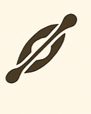
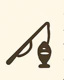
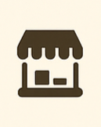

üßÄ Fiesta Nacional del Queso

Celebrada anualmente en febrero, esta fiesta honra la tradición quesera de la región.
üèâ Seven de Rugby de Taf√≠ del Valle

Este torneo de rugby, que se lleva a cabo en enero, reúne a equipos de todo el país en un ambiente festivo.
Además de los partidos, se ofrecen actividades culturales y gastronómicas, convirtiéndolo en un evento integral para toda la familia
Representación de la Pasión de Cristo

Este evento se realiza durante la fecha de semana santa, mostrando una representacion de la misma
Durante la Semana Santa, la comunidad local organiza una representación teatral al aire libre de la Pasión de Cristo, una tradición que atrae a numerosos visitantes cada año
üèÉ‚Äç‚ôÇÔ∏è Marat√≥n Mirador del Taf√≠
En febrero, se realiza esta competencia de running que ofrece dos distancias: 10K y 3K
Los participantes disfrutan de un recorrido por paisajes montañosos, combinando deporte y naturaleza en un solo evento.
üé® Feria Artesanal y Gastron√≥mica
Durante todo el año, especialmente en verano, se llevan a cabo ferias en la Plaza Miguel Estévez
Donde artesanos locales exhiben sus productos y se ofrecen platos típicos de la región. Estas ferias son una excelente oportunidad para conocer y adquirir artesanías y disfrutar de la gastronomía local.
üêé Fiesta Nacional de la Chuscha
Esta fiesta destaca las costumbres gauchas con competencias de doma
Realizada en enero, con carreras de caballos y presentaciones de música folklórica. Es una de las celebraciones más representativas de la cultura local